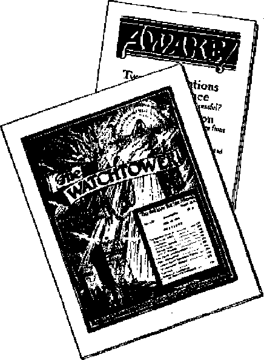

Greece now the cradle of fiendish religious persecution
Cruelties of bullfighting vividly portrayed
The lowdown on die slowdown in home construction
THE MISSION OF THIS JOURNAL
News sources that ore able io keep you awake to the vital hsueg of our times must be unfettered by censorship and selfish interests* “A wake J" has no fetters. It receiptees facte, faces facts, is free to publish facts. It is not bound by political ambitions or obligations; it is unhampered by advertisers whose toes must not be trodden on; It is unprejudiced by traditional creeds. This journal keeps itself free that it may speak freely to you. But It does not abuse its freedom. It maintains integrity to truth.
uAwake 1° use^the regular news channels, but is not dependent on them. Its own correspondents are on all continents, in scores of nations* From the four corners of the earth their uncensored, cn*ihe* scenes reports come to you through these columns. This journals viewpoint is not narrow, but is International. It is read in many nations, in many languages, by persons of all ages. Through its pages many fields of knowledge pass in review—government, commerce, religion, history, geography, science, social conditions, natural wonders—why, ite cover* age is as broad as the earth and as high as the heavens.
“Awake f" pledges itself to righteous principles, to exposing hidden foes and subtle dangers, to championing freedom for all, to comforting mourners and strengthening those disheartened by the failures of a delinquent world, reflecting sure hope for- the establishment of a right* eous New World.
Get acquainted with “Awakel” Keep awake by reading “Awake!”
SBjUIiJONTiiLI Bl
WATCHTOWER BIBLE AND TltACT SOCIETY. INC
UT Adams Street Brooklyn 1, N. Y*, IL 8. A.
N. H. Knosr, Quw Suiter, Secretary
Five cents a copy One defter a year
Rtnlttancn stfiuld ba "tot ta to yew coot* try in CcTLpiiacw (ritt repitatJwjB U guaranty 88ft dcllTery oF money. Remittances ate iceepted at ErcaHyti from caontrlesj where no office is Joested, by international money order only- Subacriptteti rates in different countries are here stated in, loc&l currency.
Ntflee of expiration (with renewal blank} is sett at least Iwo issues before autwrfptlon expire.
CliMW of UArats when «nt to onr office miy ba expected elective within one month. $eud your old M veil m nOiF fiddrws.
Office Tieariy BtfiKcrfpfJcrrr Rate
America, U.S.* 117 Adams st,, Brooklyn 1, N.T. $1 Australia, 7 Berestord Bd., Strathfleld, N.S.W. 6s Canada, 40 Irwin Are., Toronto 5, Ontario $1 England 34 Crwn Tamwe* LcAw, W. 2 Sa Soirtft Africa, £23 Breton Hoose, Cape Town Off
ItaftCTd aa aecond’Clasa nutter at BrooWi, N. Y*, Art of March 3. 1879. Printed in V. 8- A
Modern Crimes of Greek Orthodox Church
Murdering Modern Martyrs
Charges of Judaism and Communism Who Is Responsible?
Greek Orthodoxy’s Long Career in Crime Freedom of Press and Worship Killed Early Orthodox Inquisition
Death in the Arena
The Picador and His Horse
The Banderiilero Takes Up the Fight
The Execution by the Matador
Public Enemy Ko* 1
3
5
6
7
8
9
10
12
14
15
15
16
Business Junks Integrity
Prohteers from Buiidijig Paralysis Building Code Racket
“Thy Word Is Truth”
The Well-founded City Science and Invention Moonlight Dance of the G run ions Do You Mean What You Say? Monster “Lifter-Uppers’-The Vatican and French Racism Anti-Semitism Rekindled in France Watching the World
17
17
18
21
23
24 2£
26
27
28
29
Volume XXIX
Brooklyn, N.Y*, April 8, 1948
Number 7
FIENDISH persecution of Christians is now raging in Greece. Christian men and women and their children are being beaten, robbed, tortured and murdered. Not since the persecution days of early Christianity has there been such violence in Greece, but this time the persecution is not coming from the hands of devil-worshiping pagans or atheistic communists. Instead, it is prosecuted by the hierarchy of the Orthodox church. Priests are causing the police to break in and destroy the homes of innocent Christians known as Jehovah’s witnesses. Priests are having the occupants arrested, are giving them a mock trial, and then sentencing them to months and years at hard labor. Priests are personally leading mobs that beat and torture helpless women and children, mobs that break the bone£ and bodies of women, mobs that shoot down unarmed men without mercy!
How can this be? At a distance the Greek Orthodox church appears to have a glistening front of whiteness and purity. But look behind her! Look at her horrible trail of crime and violence that extends all the way back to her beginning. At her hands excommunications, anathemas and banishments have been handed out to all who opposed her. "Heretics” she has called them. Censorship, intolerance and persecution have been her handy tools of oppression. Beneath her totalitarian and dictatorial weight she has trampled under foot all minority groups, as well as all freedoms of speech, press and worship. Like a ravaging wolf she has flayed the flesh, robbed, kidnaped and murdered the innocent. For more details on Orthodoxy’s past record, which includes practically every vile deed on the criminal calendar, read the following article in this issue of Awake! Such historical record shows she has acted like a wild beast, like a leopard, and her present conduct proves that, as a leopard, she has not changed her spots.—Jeremiah 13: 23.
Beyond reform, this Orthodox gang of hardened criminals have not repented of their past deeds. And now in modern times they commit more crimes, and carry on a campaign of hate and persecution with very little official protest or opposition. Shortly before the recent war the zeal of Jehovah’s witnesses in teaching the Greek people the Bible came to the notice of the Orthodox church and immediately she brought into play her ancient weapons of intolerance. In 1939 she moved in and closed the Branch office of the Watch Tower Bible & Tract Society, imprisoned its personnel and prepared to exile them to some barren island in the Aegean sea. Only at the last minute was her plan canceled, and the release of the representatives of the Bible society secured. Then came the war, and the Orthodox church was busy wooing and collaborating with her new Nazilover.
The world in general was deluded into thinking that with the end of the war freedom of speech, freedom of press and freedom of worship would be exalted in every government, and would never again be trampled under foot, especially in countries like Greece, which boasted of being democratic. Greece, however, was one of the first places where this hope was dashed to the ground, for there, in the spring of 1946, the Orthodox church rekindled its old fires of hate against Jehovah God’s Christian witnesses. Since then thousands of these witnesses have been brutally treated and hundreds of them have been imprisoned and unmercifully beaten,- simply because they were found studying the Bible together in private homes.
On many occasions sincere students of the Bible are treated like hardened criminals. For example, on May 3, 1947, at the home of Vasilios Avgerinos, some 35 or 40 of Jehovah’s witnesses had finished their weekly Bible-study class and were returning to their several homes. Mr. Avgerinos, being ill, soon retired for the evening. Shortly the police came to his home, seized him and his son, and took them to the police station. There they saw three more of the Witnesses who had been arrested as they left the Bible meeting. These five were then charged with “heresy” and ‘’‘proselyting”, which are called crimes in that “democratic” land. During the long night that followed sixteen clergy-worshiping policemen beat and pounded the harmless prisoners with clubs until they were blaclr-and-biue. The following day they were to appear in court, as the law requires, but they were held in prison to allow their maimed bodies to heal somewhat. Three days later when brought to court and released their faces were still black and their eyes swollen, and on their backs they still bore the evidence of the ugly gashes they had received.
When it is said that these honest, up-rignt ana clean cnristians are treated worse than degenerate prostitutes it is because of cases like that of Mrs. Kyria-koula Mikromastora, who lives in Piraeus, Greece. While calling on her neighbors in her ministerial capacity as a follower of Christ Jesus she was insulted, slapped and finally taken to the local prison by the priest of the town. In court the following day, this priest declared: “It would be better for you to be a prostitute than one of Jehovah’s witnesses doing that work.” The judge agreed with the priest and sentenced the poor woman to pay a fine and serve four months in prison! Everyone will agree that in a strife-torn country like Greece, rent from end to end by atheistic philosophies, there surely is a need for individuals like Mrs. Mikromastora to increase the waning faith of the people in the precious promises of God’s Word. Yet the clergy charge such bearers of good news as being worse than sin-laden harlots and the so-called court “justices” treat them as if they were worse than wanton prostitutes.
Wherever the Greek Orthodox church rules there is a reign of terror. On the island of Crete conditions are as terrible as on the mainland. In the district of Sctoia the police of three towns have conspired with rightist guerrilla forces, and, together with the priests, have tortured all of Jehovah’s witnesses in that district. On one occasion eleven of*these faithful Christians were mauled, beaten and stamped upon for many hours. Clubs were broken over them in an attempt to have them make the sign of the cross and return to Orthodoxy. One was threatened with a large, sharp knife at his throat to renounce Jehovah God, and this after he had had three of his rihs broken. Three others were bedfast for sixteen days.
Then as a climax to this inquisitional outrage the police and the priest said that the children of Jehovah's witnesses in Seteia would have to be baptized into the Greek church. If the parents refused to bring the children that evening for the ordeal, they were told, they would be shot. The parents held fast to their integrity; so the police gathered up eleven of the children, ages two to ten, and took them to. church, where the priests performed their .dirty work. Afterwards, the police tried to justify their action by saying that they were under orders from the priests.
Similarly, at the towns of Stavromeno and Apidia the priest-directed reign of terror rides up and down the countryside. The village priest of Stavromeno, one Emanuel Kontoyiakis, held a banquet for the police and rightist guerrillas, at which time he inflamed them by saying that Jehovah’s witnesses were “depriving him of his bread” by their Bible ministry among the people. Thereupon the drunken mob (the priest saw to it that they had plenty to drink) fell upon Jehovah’s witnesses and gave them a severe beating, to the point where they were forcibly made to sign two “confessions” to the effect that they would revoke their beliefs. They were then told that the police would keep a record of their attendance at church from then on.
In the other town, Apidia, Jehovah’s witnesses were gathered together into the center of town, where both men and women were given a terrible beating with clubs. Their Bibles and Bible literature were gathered together and burned in the square, and as a warning they were told that if they failed to attend the Orthodox church in the future they would be executed. During this whole outrage the village priest, John Markis, was present to encourage the persecutors in their wickedness.
N^ar the ancient city of Sparta the flamts of this modern Inquisition have roared through several towns, taking with them the lives of faithful Christians, In the town of Vrontama a body of gendarmes under the -comniand of Captain Skarantavos found Mr. Panagiotis Tsembelis dhd a neighbor lady studying the Bible. After first beating the two unmercifully they dragged them outside, where they prepared to hang the woman. Only the protests of the villagers, who acclaimed her high Christian ideals, saved the life of this woman, but the man was less fortunate. After torturing him in a most fiendish manner, in an effort to force him to kiss their idols and make the sign of the cross, they dragged him a mile opt of town and began their torture of him all over again. Finally, they shot him in cold blood with the feeling that they had triumphed over this noble soul. There in the spreading pool of his own blood they left him. Murdered because he would not embrace the unholy Greek Orthodox church! Executed because he was caught studying the Bible with his neighbor I
Gloating in their supposed “victory” the gendarme gangsters returned to town and proceeded to maltreat all of the Witnesses they could round up. One woman’s arm they broke in their rage, and the homes they invaded were ransacked and robbed of all money and goods.
The following week these mobsters went to a near-by town named Gortsia, where they divided their forces into two groups and began a systematic search for all of Jehovah’s witnesses. Bi'eaking into the home of Mrs. Athina Kyria-koulia, age 45, four of the bullies stripped her naked, beat her, and then hung her upside down. In this position they poured cold water over her at the same time they were whipping her. Tiring of their “fun” the sadists finally dragged this unfortunate woman, in her semiunconscious condition, over to a cellar of one of the villagers. Here, in this improvised Dark Age dungeon, a total of nine women and two men were further subjected to the inhuman tortures of this modern Inquisition. Everything was complete, including the satanic presence of the village priest I
Starting back to their permanent station the gendarmes took with them the eleven captive witnesses of Jehovah. On the road, Captain Skarantavos ordered that one of the Witnesses, George Kon-stantakis, who by this time was more nearly dead than alive, be shot on the spot Two rifles cracked out in response to the order and the end of life came to another Christian martyr, another victim of the modern Greek Orthodox Church Inquisition!
Sometimes strange things happen during gruesome ordeals like this; After the bloody business was finished one of the women was given the opportunity to explain who Jehovah’s witnesses really are. Upon hearing this and realizing his guilt for the two murders, the one in charge of the gendarmes, while hanging his head, spoke as a certain Pontius Pilate and said: "I am not to blame. You have many enemies in the town of Gort-sia, especially the priest who induced me to act against you" He then went on to say that the priest makes the decisions and he only carries them out. Of a truth, this persecution in Greece is cut according to the same pattern as the Inquisition of the Middle Ages, for in both instances religion used the secular arm of the state to extort confessions, enforce baptisms and inflict torture and murder upon all who maintained their faith and integrity to Jehovah God. By such tactics religion thinks that it keeps her hands clean of any blood-guilt. Maybe her hands seem clean, but not her filthy, blood-bespattered skirts and petticoats that have dragged through the muddy mire of persecution down through the centuries. Concerning such, Jehovah in His judgment wrath declares: “In thy skirts is found the blood of the souls of the poor innocents: I have not found it by secret search, but upon all these.”
-Jeremiah 2:34.
There are hundreds of other cases of similar abuses and murderous beatings and tortures that could be related, for in the past two years the incomplete reports show that 1,154 of Jehovah’s witnesses have been arrested, and hundreds of them have been convicted on the false charges of “proselyting” and “heresy”. These figures do not include the unnumbered multitudes that have been victimized by both mobs and police and then turned loose with no charges leveled against them.
In her campaign of hate against God’s faithful witnesses the Greek Orthodox church seeks public support by falsely charging that these witnesses are spreading Jewish and Communist propaganda. Nothing could be farther from the truth, as every informed person knows. The leaders of both Judaism and Communism hate Jehovah God as much as the Orthodox leaders. Hence when pamphlets were circulated last summer that openly charged Jehovah’s witnesses with spreadingthepropaganda of these political organizations a howl of protest went up from them. On July 18,1947, the Jewish newspaper, Hebrew Estia, reported that the Jewish leaders had filed a formal protest against this false charge with Archbishop Damaskinos.
Likewise the Communists object to having their “ism” associated with the proclamation by Jehovah’s witnesses that the kingdom of God and His Christ is the only hope for the world. Hence the Communist press in Athens often blasts out against these witnesses. For example, the Free Greece, June 19, 1947, tried to embitter the people by saying that Jehovah’s witnesses are being used by the American government to further its imperial policies in Greece. Later, another newspaper of the extreme right, The. Acropolis, July 24, 1947, stated: “The curious thing about Jehovah’s witnesses is that the Nationalists consider them
‘Communists’ and the Communists consider them as ‘Black Opposers’. But the fact is they are a people who do not take part in polities, but are exclusively devoted to the study of the Bible.” And it is this devotion to a study of the Bible, and then a keeping of the righteous commandments therein contained, and also the helping of others to likewise learn how to worship God in spirit and in truth, that has brought the fire of persecution upon them from the hands of the Orthodox priests of Baal.
Though the local priest of the Orthodox church figures prominently in all these crimes, if should not be overlooked that they are acting on the orders of their superiors. The prime movers in this Inquisition are the official governing body of the Greek Orthodox Church, as evidenced by their official instructions. One of these encyclicals that was issued last summer from the office of the archbishop of Athens, head of the Greek Orthodox Church, said that every church in Greece would be taxed 50,000 drachmas, which amount would be used in the persecution campaign of Jehovah’s witnesses. Continuing, the encyclical said: “On this occasion we do not omit to stress the sacred obligation and the imperative duty of the priesrs to systematically follow up the Millennialists [a name improperly applied to Jehovah’s witnesses].”
In Greece the Orthodox hierarchy control practically every department of the government. The bond between church and state is stronger there than in Italy or Spain. The clergy have police power of arrest. The word of the priest is often law. The Constitution, Article I, says that “the prevailing religion in Greece is the Eastern Orthodox Church of Christ”. Therefore, al] decisions by the civil courts, and all orders of government not only are favorable to the Church, but in many instances are dictated and sent forth by the clergy themselves. A report in the Athens newspaper, The News, gives a sample of how this civil-church partnership is pushing with all its might the modern Inquisition in Greece. In its issue of November 2, 1947, The News says:
We are informed that a large committee has been made up from the representatives of the Foreign Ministry, the Ministry of Education and Religion and the Archbishop; which committee will examine in detail the matter of foreign religions and their propaganda in our land, their relations with the Greek Church and the steps to be undertaken in the case of excesses [ transgressions] by the Millennialists [Jehovah’s witnesses] or other heresies.
Crime, crime, and more crime! All old-fashioned freedoms have been killed. Freedom of speech, freedom of press and freedom of worship are dead. In their place stands an astonishing and altogether different freedom, viz., freedom for criminals! Freedom for the mobsters, thieves and murderers, but not for the righteous, just and true. Freedom for crooked gangsters, but not for gentle Christians! This is “orthodox” freedom, freedom to persecute Christians. And it is the kind of freedom that is being sponsored by the Truman doctrine.
A billion dollars worth of UNRRA aid has been poured into Greece; fifty shiploads of military, supplies worth more than $100,000,000 have been sent by the United States; and British and American personnel are now training and instructing the armies of Greece. All of which will further strengthen the wicked persecuting hand of that church-state rule. What a sad outlook, were it not for the knowledge that shortly this bad criminal account will be fully settled, when the Greek Orthodox Church pays for all her crimes at the battle of Armageddon, “the battle of that great day of God Almighty.”—Revelation 16:14,16.
Greek Orthodoxy’s Long Career in Crime
H ARDENED criminals are hated by persons who love righteousness. Especially is this true when such criminals put on a pious, religious mask and hide behind an outward robe of sanctimoniousness. It is therefore shocking to lovers of truth and justice to see such type of criminals fully organized and operating today with perfect immunity. How can that totalitarian and dictatorial organization known as the Greek Orthodox Church, that ancient and fraudulent institution of pious hypocrites,. that institution whose criminal record is one of the blackest in history, continue to deceive the simple and at the same time spill innocent blood? Can it be that these crooks completely cover their tracks? Or is it that this present generation is totally blind? In either event, for the benefit of the hottest and innocent, it is well to briefly sketch the long criminal career of these hierarchical pharisees that operate under the worshipful title of “The Holy Orthodox Catholic Apostolic Eastern Church”.
After the pagan politician Constantine, A.D. 325, mixed the demonic pellets of paganism with the slime of apostate Christianity the religious pudding of the Roman Empire began to swell from the fermenting gases of internal rivalry and jealousy between both the bishops and the patriarchs. Mosheim, the eminent historian, says that the rivalry and ambition of the patriarchs t h e m-selves “gave birth to abominable crimes and the most destructive wars”.
During the fourth and fifth centuries the patriarchs of Orthodoxy conspired with the civil rulers in order to increase their own power and at the same time supipress those like Arius and Nestorius that opposed them. Arius of Alexandria, as a victim of religious intolerance, was finally poisoned to death. Nestorius, the presbyter of Antioch, without being given a hearing was deposed from his office and was banished to Arabia Petraea, and finally died in Egypt. Thereafter the followers of these men were pursued and persecuted with vindictive hatred by the “holy” Orthodox church.
The golden opportunity for the Orthodox patriarch came in the latter part of the fifth century when Romulus Augus-tulus resigned as the imperial ruler and the seat of the empire was moved to Constantinople. This added great precedence to the see of that city and the Orthodox hierarchy made the most of it. Justinian became emperor in the year 527 and the illicit union between Orthodoxy and the Roman state reached the zenith of its power. No emperor so completely assumed the position of a temporal pope as did Justinian, while at the same time the title of Ecumenical Bishop, that is, ‘he who rules the whole world,’ was bestowed upon the patriarch of Constantinople. Boasting over this wicked union of church and state, as an underworld gangster does when beholding his domain, Justinian declared:
Among the greatest gifts of God bestowed by the kindness of heaven are the priesthood and the imperial dignity. Of these, the former serves things divine; the latter rules human affairs and cares for them. Both are derived from the one and the same source, and order human life. And, therefore, nothing is so much a care to the Emperors as the dignity of the priesthood; so that they may always pray to
God for them.—Justinian’s Novel 6, March 16, 535.
Blessed abomination.! To insure that such wicked religio-political dictatorship might continue to ride securely in the saddle, magistrates were compelled when taking office, and soldiers also when enlisting, not only to swear allegiance but also to take an oath before three witnesses that they were Orthodox Catholics. All gang-rulers since then have adopted a similar procedure for their protection.
Murder? They thought nothing of it If someone stood in the way of their ambitions he was removed. How mattered not. And so it was in the carrying out of the Orthodox scheme of uniting the East and the West. Theodora, the wife of Justinian, had Pope Silverius (A.D. 536-38) disposed of by death in order that Vigilius, an ally of Orthodoxy, might be set upon the papal throne of Rome.
Freedom of Press and Worship Killed
When civil powers have illicit relationship with ecclesiastical authorities it is ' not long before a hideous brood of censorship, intolerance and persecution is brought forth. The case in hand was no exception. When the man Nestorius fell under condemnation the Orthodox church had his writings put under ban. Later the writings of his teacher Theodore were anathematized, and woe to the person who, believing in freedom of the press, was caught reading such “indecent” lit-erature1
“Heretics!” That is what Orthodoxy loves to label all who hold opinions different from her own. But she does not stop at calling names. Violent persecution is launched against all opposed to her tyrannical rule. As mentioned, the followers of Arius and Nestorius oanic under fire. Likewise believers of Eu-tyehes received similar treatment. The Monophysites, or Jacobites as they were called in later years, were the objects of terrible persecution. The Maronites of
Lebanon were another sect, concerning whom H, L. Hastings says that when persecuted “they retired to the fastnesses of Lebanon, where they bade defiance to their foes, and have continued to this day a brave, industrious and devout people”.-Introduction to Murdock’s Syriac New Testament, page vii.
Freedom of worship was trampled under foot and with it all minority groups that did not bow down to the idolized state religion. Samaritans were thrown out of their synagogues. Jews were forbidden to hold any professional jobs or to be heard in court. Gnostics were forbidden to meet together; their churches were closed; and they were allowed three months in which to join up with the “beloved mother church”. When a disputation over certain beliefs about the “trinity” arose Justinian had an edict issued on March 15, 533, condemning anyone that disagreed with the Orthodox teaching. Ten years later when another discussion came up over the teachings of Origen a set of anathemas were issued against such. Then when the authority of the church-state combine was extended out to include North Africa the Vandals of that area, who were Arians, came in for their share of religious persecution at the blood-stained hand of Orthodoxy. The goods of the Vandals were confiscated for the church; they were forbidden to baptize their children; they 'were deprived of all public exercise of their form of worship; and they were disqualified for all civil offices.
During that black period of civilization the state church pursued every avenue of social activity with the zeal that is so characteristic of totalitarian regimes. Educational opportunities were denied to everyone that would not join the Orthodox church. Think of it, to be a citizen and to enjoy the rights and privileges of citizenship a person had to be baptized into the Orthodox religion! And don’t think that baptism in that sixth century was a voluntary matter. One of
the favorite tricks oi uiose conscienceless priests of Baal was to round up nonconformists and forcibly baptise them and their families at the point of the civil sword. History records that on one such occasion, after a community of the Montanist sect in Phrygia had been baptized against their will, many of them went out and killed themselves. Such crimes have upon them the indelible. fingerprints of Orthodoxy,
Following along this trail of blood one comes upon the scene of another crime that is far more horrible than any so far related. The Manichseans were another group that were the victims of much persecution, In fact, they were considered as outlaws and if caught they were subject to the penalty of death, B, J. Kidd, of Oxford's Keble College, in telling of the persecution of the Manichscans says: “On one occasion at Constantinople several of that persuasion were placed aboard old hulks and, when these had been towed out to sea, were burnt alive,” (The Churches of Eastern Christendom, 1927, page 56) Only the Devil could inspire those that serve him to commit such a fiendish crime as that!
Early Orthodox Inquisition
At the same time the Orthodox dicta torship carried on its open persecution of other sects it set up a secret internal spy system. A,D. 546 Justinian armed a certain John of Ephesus with authority to carry out this Inquisition among those in the government who were suspected of believing something besides Orthodoxy, Among those found ^guilty” were many high-ranking patricians as well as scholastics, physicians, sophists and grammarians. The prefect of Constantinople, Phocas by name, being among the victims and having no way of escape, poisoned himself. Others more fortunate (or were they?) were condemned to Assemble in a church, there to listen to the noble John of Ephesus bray*
No, this information is not found in the standard works, for the Orthodox nierarcny aia; a goon ]od or covering their criminal tracks. But about the middle of the last century a very ancient Syriac manuscript was found, called The Third Part of the Ecclesiastical History of John, Bishop of Ephesus, that contained a few vivid details of that ancient inquisition as it progressed from and after 571, Even John himself, according to the Catholic Encyclopedia, fell victim and suffered "'imprisonment, banishment, and all sorts of vexations at the hands of the orthodox patriarchs”. The following is from an English translation of his Ecclesiastical History made by R, Payne Smith in 1860, pages 6 to 8.
The patriarch’s chief attack, however, was directed against moiiasteries, of which there existed many both in Constantinople itself, and its neighborhood, and of these several had a very large number of inmates, especially the convents, in which the late queen Theodora [wife of Justinian] had placed the nuns who in a previous persecution had been driven out of Antioch, Isauria, Cilicia* Cappadocia, and the Roman provinces in the east. So powerful, in fact, were some of those establishments that they numbered more than three hundred members* Upon these then also descended the storm and tempest of persecution, and a murky cloud and terrifying darkness covered them; for there came clergy and laics with the prison-keepers* and sergeants, and along with them the body-guard of the prefect of the city; who being let loose upon them with barbarous violence surrounded the convents, and like a troop of wolves breaking into and falling upon a fold of sheep, so they rushed in, and Mid their destructive hands upon the in-mates, who were Christ's own lambs; and the clergy, who had brought with them consecrated bread, dragged and pulled them by main force to make them receive the communion at their hands*
And what was the result of this vicious ^conversion” at the very hand of the clergy? The account continues.
Some of them then they thus reduced to obedience; but others who still resisted, and would not yield, they separated nom the resu, and expelled them from their convents, and delivered them into the hands of the Roman sergeants, by whom they were hurriedly torn away, and taken to the city, and dispersed there among various houses and prisons; and, as was said, they there met at the hands of some with treatment too wanton and abominable ^or us to mention. But there is One, Who seeth their cause and avengeth their quarrel. And thus then, and in this savage and barbarous manner, were the convents treated.
These Orthodox criminals, being too hard to reform, continued their career right on down from that “golden age” of Orthodoxy in the sixth century to the present time. True, they suffered setbacks from time to time when their civil “swords of the church” were broken by invading hordes of Kurds and Ottomans. But somehow they have always managed to forge new ones with which to defend and prosecute their racket. An instance of this was in 1850 when France on behalf of the Vatican made certain demands that Turkey turn over the protectorate or guardianship of certain “holy places” to Boinan Catholicism instead of giving it to the Greek Orthodox church. Immediately the Orthodox clergy got the czar of Russia to intercede in their behalf. England too, as is well known, has safeguarded and protected the interests of the Orthodox criminals and permitted them to oppress the populace as they please.
The clergy of Greece have always backed the dictatorial ruling power, or royalist power in the country, ever since the days of Justinian, regardless of who they are. It is an accepted fact that during the occupation -of Greece by the Germans and Italians during the recent war most of the metropolitans collaborated wim the conquerors. The Athens metropolitan, Damaskinos, in his letter of June 10, 1941, felicitated the quislings who had co-operated with the enemy, since it was by their support that he assumed his office. Metropolitan James of Mytilene, a partisan of the Nazis, not only advised his flock to work with the Nazis, but also went so far as to exhort them to assassinate fellow citizens who resisted the invaders. This was too much, and the public prosecutor was obliged to intervene. Other notorious metropolitans, including Spiridion of Zante, Amu-rassios of Fthiotis, lerotheos of Akarna-nia, and Yennadios of Salonica, joined up and worked with the invading gangsters.—See the newspapers: Embros, April 20, 1947; Eleftheri Lesvos, January 15, 1947; Ethnikos Kirix, February 25, 1947, and April 21, 1946; also document of M. Tsimbris, governor-general, dated December 12, 1943.
Nor did this terrible record of crime come to an end when the Axis hordes were driven back to whence they came. One would have thought that the conquering Allied forces, that boasted how they would execute justice and take vengeance on humanity’s criminals, would bring to an end this long career of Orthodox crime. But, as the preceding article in this issue has pointed out, the Allied forces condone these criminals and encourage them indirectly by material aid and support. The powers of this wicked world wink at this long career of crime. But praise be to God, there is One in the heavens who sees all, knows all and remembers all of this blood-soaked history! Let all lovers of righteousness and justice rejoice in the knowledge that Jehovah of hosts will not sleep until He has avenged the blood of His saints and forever put an end to all criminal careers.
'•(I 0**
Ths priest’s lips should keep knowledge, . . . but ye are departed out of the . . . ye have corrupted the covenant . ... Therefore have 1 also made you contemptible and base before all the people,—Malachi 2:7-9.
nouneeinent on August 29, 1947, brought mourning and sorrow to an unnumbered multitude of Spanish-speaking peoples. Since that time many masses have been said for the rest of a supposed soul of “the best”, one Manuel Rodriguez Manolete. Perhaps only the death of President Roosevelt in recent years has caused such grief to so many persons. However, to the millions of North Americans the death of Manolete meant little or nothing, for, had they eypr heard of this personage,* they had soon forgotten him. But to the Spanish peoples he was perhaps as popular or well known as is Joe Louis or Babe Ruth to the American public.
Manuel Rodriguez Manolete was a bullfighter considered by some the greatest of all time and by others the best in the modern epoch of bullfighting. Evidently the virgin to whom he probably prayed for protection and guidance was not on the job that August day when Manolete was gored to death by the needle-sharp horns of a Muira bull, as vicious as an enraged lion and every whit as dangerous. If Manolete had a special virgin saint to which to pray, as most bullfighters have, she forsook him or had little influence over the bull. Or, if his favorite saint was not around, where was the virgin of Soledad, the patron saint of all bullfighters, whose picture or image hangs in the large Madrid bull arena and in many others? All such prayers for aid in killing and fighting the bull, of course, are of no avail, because these many saints are nonexistent.
The hull ring or arena is called the "plaza de toros”, and hundreds of these exist in Spain, plus many others in Latin-American countries, including Mexico,. Peru, Panama, Venezuela and Colombia. Each of these arenas has a special chapel where the bullfighters can address their prayers to their beloved saints before each encounter with the wild beasts- Or, if dying from being gored, here they are administered the last rites. However, bullfighting is illegal or unpopular in most of the Latin-Anier-ican countries as well as in other parts of the world.
We will say at the outset that bullfighting is certainly not a Christian sport, which a brief history of its pagan origin and a description of a bullfight will clearly show. In fact, it is really not a sport at all. By some bullfighting enthusiasts it is termed a drama, but in reality it is nothing but a tragedy of blood, since in each affair six bulls die and usually two or three horses are badly gored and killed. The bullfighters themselves, if not killed, are often severely injured by the bulks horns. Living matadors are usually covered with scare from feet to neck, where they have been caught by the horns sometime during their careers.
When did bullfighting begin? Its history is almost as old as that of the Catholic Church. Some say the ancient Greeks carried on a form of bullfighting; also that bulls were fought by the early pagan Romans. But it is quite probable that it began with the Moors of North Africa and was introduced by them to Andalucia, Southern Spain, about A.D. 800. When the Moors were finally driven from Spain the Spaniards had adopted bullfighting, and the Encyclopedia Britannica tells us that the time when the first Spaniard killed a bull in the ring was A.D. 1040. Bullfighting has undergone many changes from that time until today. Now we have a somewhat revised form of this tragedy.
In Bogota, Colombia, for instance, it is a common occurrence to see posters with these words: Toros - Domingo -Seis Toros a la Mtjerte - Plaza de Toros (Bullfight - Sunday - Six Bulls to the Death - in the Bull Ring).
That we may get an on-the-scene account we have tickets and soon after find ourselves in the circular arena, which is packed out In front of the first row of seats is a passageway about five feet wide all around the arena. This is for the use and protection of the bullfighters' assistants. At one side we notice the chutes where the bulls are kept, and at the other side is located a hospital for the wounded. We cannot help but note also the chapel. We have taken in our surroundings none too soon, for now it is starting time* There appears the president who is to take charge of the afternoon's performance. A bugle sounds and the fight is out First comes the parade of the bullfighters, of whom there are three classes, all of whom engage in the same fight. First come the three matadors, the main fighters, those who actually kill the bulls. They are arrayed in gaudy gold-and-silver-embroidered tight-fitting costumes. Each one is followed by his assistants, two or three banderilleros and two picadors on horseback* Soon afterward the president gives a key to a bull ring attendant, who unlocks the chute where the bull is' kept, and the bull charges .into the ring as an exciting start of the bullfight tragedy. What is that small peg in the back of the bull, about four inches long, with short pieces of colored cloth? A neighbor informs us that this denotes the rancher that bred the bull.
As we see the belligerent and ferocious animal rushing into the ring we are glad that we are in our seats and not in the arena. We have learned that such bulla used for fighting are not just ordinary ones but are of a special breed and are bred only for fighting purposes. There is as much difference between the looks and actions of these bulls and of a domestic bull as there is between a shepherd dog and an African lion. This particular bull this afternoon is coal-black, with his glossy coat shining in the sun; he has a huge lump of muscle on his neck, giving him somewhat of a buffalo appearance.
As this big, vicious bull rushes into the ring his every attempt seems to be to sweep the ring clear of everything movable. Suddenly from the side of the arena one of the banderilleros runs toward the bull and cuts across its path, dragging in his hand a large crimson-colored cape, crimson on one side and seemingly yellow on the other* This cape is almost as large as a bedspread. The bull, of course, charges at the cape, hooking at the dragging end with his eighteen-inch dagger-sharp horns. From observing these actions the matador will know how to fight the bull and what must be done to regulate bad hooking. Also the running of the bull by the banderillero is to bring the bull to the section of the arena for the next act. We are reminded that from the time the bull left his pen to enter the ring, the matador has only fifteen minutes to prepare anti kill the animal. Therefore, after the brief testing of the bull, every action on the part of the fighters must be toward the preparing of the bull for the slaughter, called the "moment of truth”.
In the next act of the fight the matador faces the bull with a loose flowing cape, and as the bull charges he skillfully passes the animal five times in the same manner. These passes are called “veronicas”, in honor of the Catholic “saint” Veronica, who supposedly wiped Jesus’ face on His way to Golgotha. Now the bull is passed once more with a halfveronica in which the bull is turned sharply in its charge, and before the bull can collect himself the matador calmly walks away, ending, this part of the drama. There are other types of passes Used in place of or along with the veronicas, many of which are also called after religious “saints”. Is it not strange that bullfighting, which is purely a pagan drama, should have attached to it titles or names of “saints” of the Catholic Church, which organization claims to be Christian 1
When the passing of the bull with the cape has been well performed, meaning that the fighter has passed the long, ugly horns very close to his body, the crowd goes wild, showering the arena with bottles, cushions, etc. On the other hand, if, he has shown any signs of cowardice, ’ the crowd boo and jeer him, and some fighters have been mobbed from the ring by a demonized crowd who figured they were not getting their money's worth. These bullfights usually accompany religious feasts and celebrations with much drinking and hilarity.
Back to the fight I At the sound of another trumpet from the president’s box, the next act begins. By this time it is 'clear that the bull is fast on his feet and seems bent on destroying his enemies. Therefore, the next acts are to slow him down and th provoke him to charge more viciously. Unless the bull is cut down in his speed, it will be impossible to perform beautiful passes with the muleta (a kind of cloth different from the cape used at the beginning of the fight). Now the picador, mounted on horseback, does his part. He carries a long pole at one end of which is attached a sharp four-inch blade. As the bull charges the horse, the picador endeavors to cut some of the muscles in the hull’s neck. This weakens the bull, slows him, and causes him to lower his head.
Of course, the bull reaches and gores the horses in these charges, many times disemboweling the poor creatures, which are usually blindfolded so they cannot run from the bull. Many times these horses that are ripped open by the horns of the bull are taken from the ring, sewed up, and used again that same afternoon in the second or third fight. Horses that are badly wounded are supposed to be killed, but the money-hungry horse contractor who furnishes the horses for these fights, in order to save money, sometimes goes as far as packing a ripped-open horse with sawdust, sewing him up and sending him back into the ring. The horses do carry a small amount of padding over their stomachs and chests, but even at that 6,000 horses are killed annually in Spain alone in the manner described above. Bullfights are indeed a tragedy for the poor horses.
Many times the bull lifts both horse and picador and throws them into the air. If the picador falls to the side opposite from the bull, all is well unless the horse falls on him. If the picador falls on the side where the bull is, he is usually badly gored before the bull can be attracted away from him by the matador with a cape. Many 'a picador is killed in this manner annually, the bull catching him on one horn, pitching him into the air and, as he falls, goring him with the other horn. This act of the fight has lasted only a few minutes, but it has served its purpose of inciting the bud to great anger. It has slowed and tired him, and his being allowed to gore and kill the horses, we are told, is to give the bull confidence that he can also destroy his other enemies, the men on foot.
Right from the start, then, we can see bullfighting means mutilated bodies of both horses and men, yes, and very often violent death. So, if you like death, blood, and plenty of action, the place to go to see it is a bullfight. But wait, someone says, you have not seen anything yet, as a bugle sounds for the next division of the fight. Suddenly out from the side of the ring runs a man straight for the bull, having in his hands only two colored wooden shafts about three feet long with harpoon-like points. These shafts are called “banderillas”, and the man who has them, the “banderillero”. As he comes in contact with the bull he rises on his toes, feet together, extends his hands with the shafts above his head and plunges the two harpoon shafts into the bull’s neck high up near the shoulders, at the same time seeming to vault or pivot on the shafts around the tips of the bull’s horns as the bull charges by. His timing and footwork must be perfect to perform this. A moment too slow means death. He places three or four pairs of these shafts in the neck of the bull. There are also different ways of placing these shafts.
But what purpose do these serve, you might ask? To provoke the bull more, and, if those do not serve this purpose, then loaded shafts are placed in his neck. As they explode, they drive the bull mad with rage. Also, these shafts are supposed to correct any default in the hooking of the bull: that is, if the bull has a tendency to hook with his right horn, then these shafts or bande-rillas are placed on the left side to correct this. This is perhaps one of the most dangerous parts of the whole fight, as the man with the banderillas has no protection other than his quick footwork.
The placing of the shafts completed, the bugle sounds for the final or third part of the fight, the “moment of truth” or execution. If the other bullfighters have done their parts well, the bull reaches this stage slowed down but more dangerous than ever, more determined to kill, and charges with his hea’d held low, which is an important part in order that the bull may be killed quickly and according to the rules. Again the matador takes over the bull, this time armed with a scarlet cloth much smaller than thy cape. This cloth is the muleta, and with it a good matador can completely dominate a bull and drive the spectators into a frenzy by his daring maneuvers. All the famous matadors have invented different spectacular movements in the passing of the bull. Some pass the bull so close to their bodies that the horns rip loose the gold embroidery from their costumes. The closer to their bodies they can pass the bull, the better the enthusiasts like it. The events in the Coliseum of pagan Rome could hardly have caused more demonic hilarity on the part of the audience than these narrow escapes from death.
As the final moment of the fight draws near, the moment of the slaying, the work of the picadors, the cape bande-rillas and muleta have so tired the poor bull that he can hardly move and stands panting with his tongue lolling in the dust and usually he charges only when provoked. The matador now dedicates the bull to some friend or noted personage in the audience. He then receives a long razor-sharp sword from his sword handler, and, with the sword in the right hand and muleta in the left, he approaches the bull. The bull is standing quite still watching him. As the matador approaches he endeavors with the muleta to get the bull to stand with hia forefeet together, in order that the shoulder blades may be wide apart for the sword to enter and strike a vital nerve center, blood vessel, or the heart, which will usually kill the hull instantly as though he were struck by lightning. This act is not easy, but requires all the skill and knowledge of bulls that the matadors can muster. The fifteen minutes from the time the bull entered the ring are about up; so no time must be lost. The muleta in his left hand he holds low to bring down the bull’s head. He sights with the sword for the vital spot between the bull’s shoulders. When he is right upon the bull, the bull probably will make his final charge at the muleta. About this moment the sword hits him. As the matador is directly in front of the bull, he thrusts the muleta in his left hand to the right and the bull swings with it, allowing the horns to clear the man’s body. As the sword drives home, the bull dies almost immediately. Sometimes the thrust of the sword causes the beast to throw his head in agony, and it is in these cases that many matadors are caught by the horns and killed. Manolete was killed in somewhat this manner.
The moment the bull is killed the frenzy of the bullfighting enthusiasts is at its height and we see hats, bottles, cushions, rain down from the bleachers. Many times, after a superb performance the crowd swarm into the ring and carry the matador out on their shoulders. The matador is also awarded the ears or tail if his performance has been good.
This ends the first fight of the afternoon and the first such experience for us. Most Anglo-Amer leans have seen enough by this time. But remember that each afternoon six bulls are killed in the same manner by three sets of bullfighters, each group killing two bulls; so the whole affair lasts about two hours. Incidentally, the horses killed at the beginning of the fight are left lying in the arena until the bull is killed ; then a team of horses rushes in and drags out all the dead. How can anyone, pagan or so-called “Christian”, get any enjoyment from such an affair is more than we can say. However, most bullfighting enthusiasts are members of the largest religious organization in the world.
There are a few other outstanding points about bullfighting that will hglp us to see its demonic, origin and why it is called by many “the tragedy of the bullfight”. For example, if the matador fails to kill the bull in the allotted time, the bull goes free from the ring; but because he is usually badly butchered up he is killed. If not damaged the bull is used on a bull ranch as a seed bull, but the same bull is prevented by law from ever entering a bull ring again, the reason being that a hull once having fought could never be deceived by the cloth cape or muleta and would surely gore the matador in a succeeding encounter, A little more about these fighting bulls. A thoroughbred fighting bull can run faster than a horse for a distance of twenty-five yards, can turn faster than a polo pony, and has strength enough to pitch both horse and rider over his back.
True, Manolete is dead, but bullfighting in some countries is very much alive. It will be good news to Christians when it can be said that this practice of barbaric cruelty upon dumb, brute beasts is also dead.—Awake! correspondent in Colombia.
Public Enemy No. I
» 11 <*•
“At the opening of the century what is loosely called ‘heart disease’ accounted for 118.1 deaths per 100,000 population of this city. The rate has steadily increased ever since, until last year it reached 400.2 per 100,000. No age group has been spared. More children, for example, are killed by some impairment of the circulatory system than by poliomyelitis, measles, whooping
cough, scarlet fever and diphtheria combined.”—New York Times, January 13, 1948,
JSTpOR we brought nothing into
I? this world, and it is certain we can carry nothing out. And hav-ing food and raiment let us be therewith content.” Thus spoke an inspired Bible-writer, Paul the TK apostle, concerning the basic needs of all men. He added that seeking < after riches imperiled the Chris-tian, “for the love of money is the root of all evil.”—1 Timothy 6:7, 8,10.
Just what a multitude of evils has been wrought by commerce’s mad quest for money is too wide a field for discussion here. The slimy pages of history would have to pass in review. But the manner in which business is failing and injuring man in his imperative quest for food, shelter and clothing in this most critical day, in this most opulent of all countries, will sound amazing to some.
At least one-third of the men who fought for the better way of life are at present frustrated from getting even decent living quarters. Despite government financing aids, several million veterans cannot get homes of their own. If you should happen to drive through an exclusive residential section and observe the well-kept lawns, the graceful architecture, the sun and shadows upon red and green and white landscape and stately walls, and perhaps soft laughter and tones of enjoyment faintly reach the ears, or silent grandeur delight the eye —you should not forget something. There arh 11,000,000 homes in the Unit-
cd States that do not have running water; 14,000,000 without toilets that flush.
Then, if this fact is not too surprising, reflect that among the various commercially guilty who have thwarted the construction of new homes is none other than the old trumpeter of its civic virtues, the American Legion. Some of the young veterans who accepted the Legion’s seductive claims for itself, and joined up, are now its foremost critics. In a recent meeting “there were open charges that the American Legion had become the errand boy of the real estate lobby” ( American. maguvAne, Heemnber 1S4T>-
But why are the manufacturers of building material, the landlords and proprietors, and the real estate agents throughout the country interested in keeping home construction in low gear and the brakes dragging? It seems that love of money has something to do with it. As far as the material manufacturers are concerned, as long as few houses keep the demand exorbitant, they can get big prices for small production. As far as the landlords and proprietors are concerned, they are happier to keep their establishments full than to have to compete with modern construction.
As far as the realtors are concerned, new houses do not require their services to sell, but old houses may require their services to sell, several times with several commissions. What would be better suited to their common purpose than a Congressional lobby? (Note definition: “The persons who haunt lobbies for the purpose of soliciting legislators in order to influence the action of a legislative body.”—Funk & Wagnails New College Standard Dictionary) Just what a lobby is willing to pay an errand boy is a matter of Conjecture.
Now, with the manufacturers, the landlords, the realtors and the American Legion satisfied with interference in any and all Congressional action to remove building bottlenecks and ease the housing shortage by the simple process of helping their construction, who is dissatisfied? Nobody except the people who want homes.
Herein business has joined politics to junk all pretenses to a progressive character. It is a shackle to the feet of progress, and a foe to the comfort of millions. But even so it is not the only way in which business and circumstance have conspired to frustrate the crying need for homes. Besides the high cost of material and labor, "new home construction is expected to hurdle these obstacles while carrying a millstone of ancient and corrupt building regulations or codes. Here again we find business and politics cavorting together to spawn some unsavory productions misnamed building rules. Throughout the United States there are about 2,000 codes, the offspring of numerous huddles in the private office behind the local bar. Just imagine the confusion of 2,000 different sets of regulations, and then note how the different cities favor the local boys.
If you want a home in Denver you will find that a frame structure is outlawed and that brickmaking Denver requires a twelve-inch brick wall for residences. But the brick kilns of St. Louis have written into that city’s code that the walls must be sixteen inches thick. Despite this, “testing agencies have found that an eight-inch brick wall is sufficiently sturdy for residences, come fire, wind or homemade hoopla." It you live in Memphis, it is best to figure oa building your home of lumber, because the politicians have found that power and finance is represented in the lumber, men.
But. suppose you wish to journey to the Pittsburgh of the South, Birmingham, and build a home there. In advance you had better gpt accustomed to the idea of a big outlay for steel, because the building code is “the finest piece of propaganda the.steel industry ever wrote”. New York city, whose voluminous building regulations tome can hardly be lifted by a longshoreman, also favors structural steel, larger-than-necessary pipes, excessive vents. It took 150 men ten years to turn out New York’s code, and it is said that it is much more important to know the right people than to know what is in the book.. If you happen to take, a turn to the Middle West and locate in the great glass-manufacturing area, Toledo and Newark, Ohio, you will find provision in the code for the use of glass brick. Glass brick are nice, also expensive.
Even if you had the quaint habit of jumping up and down on your floors you would not need the floor strength requirements of some cities, 80 pounds per square foot. It is estimated that jitterbugging seldom puts a strain of more than half that amount. Construction has changed in the twenty years since most of these codes were written. Did you know that the uprights in the walls, 2/''x4-//, called studs, need no longer be spaced closer than 40 inches apart, due to the lighter construction materials? In many codes the regulations still call for 16-inch spacings. These ponderous and corrupt codes bind grievous burdens on the builder’s back, and drain precious dollars from the owner’s purse. Of course, where unnecessary amounts of brick, steel, lumber and glass are required by municipal regulations the manufacturers profit. Can you imagine why politicians would want to favor large, wealthy manufacturing firms ?
Some may think that the safety factor is worth extra expense even if unnecessary for safety. But do not forget the corrupt building inspector. The contractor knows his fee, and even a(ter all the heavy regulations are apparently met, and the building passes inspection, it may still fall down on your head, as in the ease of some GTs recently.
All this would seem bad enough, but then there is labor to contend with. More excuse for the labor unions than others exists because they really seek more take-home pay for a man that is having a tough battle to get anything for his money. But today labor has in many instances also junked integrity by the slowdown and unreasonable practices. For instance, in order to spread out the painting jobs throughout the nation the unions have dictated the maximum width of a. brush at four inches. In St. Paul a group of painters quit because a checkup revealed that the brushes in use were J inch too wide. Unions are also fussy about who does what work. A great outrage to union carpenters was perpetrated in another city which caused them to leave the job—a common laborer picked up a hammer!
Before the war it was common practice for bricklayers to lay from 750 to 1,000 bricks per day. Certain efficient men surpassed this. Recently in Virginia union bricklayers told a contractor secretly that they would be dismissed from the union if they laid more than 400 bricks per day. Other union regulations require skilled craftsmen for such operations as following the floor sander to aid him by plugging and unplugging his connection to the wall socket; uncrating and carrying bath tubs to location; riding in the truck beside the driver simply as a non-working companion. (These practices are known as “featherbedding”.)
Foolish aind expensive labor duplication include the St. Louis elevator case. The electricians to whom the elevator was delivered by the factory for erection, seriously and without cracking a smile, tore out all the complicated wiring installed by the manufacturer, and somberly proceeded to put it back in again. What if a member of that union had received an electric clock to install on the wall. Imagine the fun and much lighter work they would have had disassembling and reassembling the clock. Besides the pay for time, they would have had some spare parts left over to take home to the kiddies I
Collier's estimates that such practices are costing the American people at least 220,000 homes per year in lost production, and $300,000,000 in added home cost. America needs million homes per year for the next ten years, and one expert estimated that this number could be built. Only about half this number were built in 1947, and besides labor cost one authority estimated that all material cost about 100 percent more than factory production cost. At least part of the complicated cause is the junking of integrity by both business and labor, which itself has become big business, the refusal to give honest measure for money received.
The increased cost of food and clothing. might be overlooked if quality were maintained. As to women’s clothes Consumer’s Research estimates that 80 percent of women’s last year wardrobe was outmoded by the “new look” of paddings and sagging, surplus cloth that seems to say something is slipping. And with all that how is beauty served by such dowdiness?
These are minor follies, but, indeed, eating has become a major hazard. If you have lived a cautious life, avoiding high places, airplane travel, Los Angeles traffic, and arbitrating other people’s domestic controversies, you need to list another danger to modern existence, the blue plate special. From the hotel or restaurant meal you can only contract diarrhea, retching, aluminum poisoning, staphylococcus, streptococcus, diphtheria, tuberculosis and the other diseases carried by humans, insects and rats. “Filth in restaurants has reached the proportion of a national plague,” said a national health examiner. In twelve months concluding in 1947, as many as 23,765 cases of “food-borne poison” occurred throughout the nation. Of these it is the staphylococci bacteria, associated with boils, that causes the violent retching and simultaneous diarrhea.
A countrywide investigation disclosed that food wTas contaminated with insect parts, nests of bugs and weevils, and rat excreta. Utensils and spoons had spoiled food and saliva ridges, glasses showed germ-laden lipstick stains, while samples of the worst dishwater showed a bacteria count about as great as sewer water. Concerning the- extent of unsanitary practices in food establishments, Dunean Hines, the well-known authority on eating places, stated with emphasis that “two thirds of the eating places listed should be padlocked in the interest of public safety”.
Of all cities in the country St. Louis has made some wonderful progress in cleaning up its disease-carrying restaurants. After a bitter fight of several years’ duration, the aidermen passed an ordinance requiring regular inspection of eating establishments, and a posted grade of “A”, “B” and “C” rating to be displayed. In this connection instruction for food handlers was provided, and after some opposition many of the restaurants co-operated enthusiastically. The investigation revealed that often the finest dining rooms had extremely dirty kitchens, that a hamburger stand had the highest rating, while hospitals and the
City Hall restaurant were among the lowest. Now St. Louis has established the card system so satisfactorily that not even bums will take a handout from “C” establishments. Other cities might well profit by the example of St. Louis.
Thus the process of cheating and poisoning the public goes on by business that no longer makes any claims to square dealing. It has in large measure junked integrity. As to reliability, the editor of Consumerfs Research Bulletin stated:
We regret to say that we do not Atmw of more than a very few com panics that consistently support and live up to such a policy . . . Looking over voluminous files of Federal' Trade Commission and Food and Drug Administration eases, one is struck by the fact that it is not just the little unknown fellow who is guilty of advertising and sales misrepresentations and adulterations of foods and drugs, but “some of the very best people” and some of the biggest and oldest firms in the business world that have been found guilty of violations. . . . Established firms often ride along for years on a reputation that does not reflect the quality and value of things they make today. (August, 1947)
The mercenary purpose of business is scarcely concealed today. Not even the painted-on “honesty” and the attractive decoy of the courtesan are often bothered with. Harlotrous business is out to get money, and as long’as the public is too needy to be particular, why worry with the usual deceptions? Love of gain is indifferent to honest measure, fraudulent practice, and even to man’s right to be protected from the purveyors of poison. The unscrupulous junking of all decent standards emphasizes the demonbacking of commerce, and the need for righteous rules in the proper trading between men. Jehovah’s kingdom will bring that as well as every other good thing that men coaid desire.
As a cage is full of bird^ so are their houses full of deceit; therefore they are become great ? and waxen rich.—Jeremiah 5:27.
The Well-founded City
TIE Almighty God promised to be the builder of an eternal city, “a city which hath foundations, whose builder and maker is God,” to quote from Hebrews 11:10. No, this is not Rome, neither is it the proposed capital city of the United Nations on the western bank of the East river flowing through New York. It is the capital organization over all of God's universe, and He establishes it in the heavens.
According to the symbolic phrase of the Bible a “city” is an organization that governs. In this sense we read: “Great is the Lord, and greatly to be praised in the city of our God, in the mountain of his holiness. Beautiful for situation, the joy of the whole earth, is mount Zion, on the sides of the north, the city of the great King. God is known in her palaces for a refuge/' (Psalm 48:1-3) In this text the “city of our God” is, prophetically speaking, the government Of holiness that shall govern the new world in righteousness. In Scripture a “mountain” is also used as a symbol of God's Theocratic organization, and in the foregoing text it is called “mount Zion”, which is “beautiful for situation”. It is the city of the New Jerusalem, not New Rome, and is the Holy City, of which Jerusalem was a pictorial type. The glorified Lord Jesus Christ revealed to His servant John the apostle the importance, the glory and the beauty of that holy organization, and hence John wrote: “And I saw a new heaven and a new earth: for the first heaven and the first earth were passed away; and there was no more sea.
“And I John saw the holy city, new Jerusalem, coming down from God out of heaven, prepared as a’bride adorned for her husband. And I heard a great voice out of heaven, saying, Behold, the tabernacle of God is with men, and he will dwell with them, and they shall be his people, and God himself shall be with them, and be their God, And God shall wipe away all tears from their eyes; and there shall be no more death, neither sorrow, nor crying, neither shall there be any more pain: for the former things are passed away. And he that sat upon the throne said, Behold, I make all things new. And he said unto me, Write: for these words are true and faithful/ -—Revelation 21:1-5.
This holy city is New Jerusalem, which comes dowm from heaven, and does not rise up to heaven with man-made skyscrapers. It represents the capital organization of the Most High God, over which Jehovah God has made His beloved Son, Jesus Christ, to be Head, Lord, and King of kings. Every whit of that city organization is dedicated to the Holy One, Jehovah, and to His service and to His glory forever, and is not split up by many religions and many political ideologies. That city or organization is the kingdom of the Almighty God, for the coming of which Jesus Christ instructed Ills followers to pray continuously till now: “Our Father which art in heaven, Hallowed be thy name. Thy kingdom come. Thy will be done in earth, as it is in heaven/’ (Matthew’ 6: 9,10) It is Jehovah’s heavenly government through which He will vindicate or clear His name and His rightful sovereignty over the universe. It is the New World government through which the people that live will be governed after the battle of Armageddon.
That righ'?ons capital organization is created a “city” up in heaven, and comes down “from God out of heaven” to take charge of the earth and to rule it. The Holy City, or kingdom of God by His Christ, is therefore the most important doctrine of the Holy Bible. Every person who loves righteousness and who desires life will diligently seek to inform himself of that great and glorious "'‘city"'. Prominent men of ancient times were, away back in their day, interested in that city, and so why not we, when we are so near its full manifestation to the people of earth? Among such men was Abraham the son of Terah. He was willing to leave his homeland in the heathen land of Ur of the Chaldees in order to show his faith in God’s promise to establish that “city” in the divinely appointed time. On this we read: “By faith Abraham, when he was called to go out into a place which he should after receive for an inheritance, obeyed; and he went out, not knowing whither he went. By faith he. sojourned in the land of promise, as in a strange country, dwelling in tabernacles with Isaac and Jacob, the heirs with him of the same promise; for he looked for a city which hath foundations, whose builder and maker is God.”—Hebrews 11:8-10.
To show how Christ Jesus would come to the Headship of Jehovah’s “city” or capital organization for the universe by reason of His faithfulness to the death as a human sacrifice, Jehovah God directed a prophetic drama with living characters in the career of Abraham. In doing so, God put Abraham to a great test of faith in Him. Abraham’s son Isaac by his beloved wife Sarah had now grown up to likely 25 years of age. Abraham and Sarah loved him dearly, because he was the only son of these two. But now God commanded Abraham to build an altar and to offer up Isaac his son thereon as a living sacrifice. Abraham, having great' faith in God as able to raise the dead, if necessary, to fulfill His promises, obeyed, took his son to the sacrificial site, built an altar, and bound Isaac and laid him upon the wood atop the altar in order to be burned. This done, Abraham was at the point of striking his son dead with a knife and offering him upon the altar of fire, when God intervened by His angel. Because of Abraham’s faith and obedience to that point God was satisfied and sent this angel, who held back the hand of Abraham.
This part of the prophetic drayna foretold the sacrificial death and resurrection of the beloved Son of Almighty God, Jesus Christ. It pointed to Him as the one who should be the Savior of the world, the Seed of Abraham, in whom all the nations of the earth should be blessed. (Genesis 22:1-18) That Jesus’ resurrection from the dead was here pictured, we read: “By faith Abraham, when he was tried, offered up Isaac; and he that had received the promises offered up his only begotten son, of whom it was said, That in Isaac shall thy seed be called: accounting that God was able to raise him up, even from the dead; from whence also he received him in a figure.” (Hebrews 11:17-19} And that Isaac here pictured Jesus Christ we have it shown by the apostle Paul at Galatians 3: 8-16 and 4:22-28. Those who will be associated with Christ Jesus in that capital city as His eo-ljpirs must be conformed to His course of action and must be faithful to God even to the death as Jesus’ faithful footstep followers. Then in that glorious “city”, whose foundation is God’s beloved Son Jesus Christ, they will reign with Him for the blessing of all believing persons out of all the families and nations of the earth. That will be in the new world of righteousness after the universal war of Armageddon has been fought and won for the everlasting vindication of the Most High God, Jehovah.
Science and Invention
Silk on the Defensive ft
C Ever since nylon invaded deep into the royal A territory once ruled over exclusively by King 4 Silk this Oriental Majesty has been desperately ft fighting for his life. His backers, the silk manu- r facturers, have carried on extensive research in x an effort to improve the quality of their product. ft Recently they found a better way of killing the (f chrysalises in the cocoons. Formerly this oper- ft ation was accomplished by plunging the cocoons x into boiling water and then drying them in a X current of hot air. Now the technique consists ft of blasting the cocoons with ultra-short radio # waves which kill the chrysalises without the use ft of intense heat that weakens the tensile strength X of the fibers. Silk thus treated is said to be as J strong as synthetic nylon. ft
Eggs with Plastic Jackets X
C It has been announced that if eggs are coated ft with a thin film of special plastic they can be (* kept fresh for a year or more in cold storage. ft This treatment is said to be more satisfactory A than other methods such as dipping in oil 2
^Warning on Hair Removal r
C The Journal of the American Medical Asso- 2 ciafion has asked that the public be warned ft against the dangers resulting from the use of (r X-rays to remove superfluous hair. Not only is ft there a risk of disfigurement which looks worse X than the hair itself, but it is believed that there u is a possibility that such rays lead to cancer, w)
faster Handling of Fish 2
€, The U. S. Rubber Co. is now making a ft vacuum hose that enables fishing boats at the v wharf to suck up the catch in their holds and ft dump them in storage bins a third of a mile ft away at the rate of half a million fish an 2 hour. This means an 80-percent saving in time, ft
^Dousing Fires with “'Wet” *Water 3
<L Fire-control specialists have been working ft on the idea that if burning material can be y penetrated faster with water it would aid in X extinguishing fires. Particularly is this true of ft burning bales of cotton and paper, and layers of leaves and rotted logs that water does not readily penetrate* To water, the experimenters added small quantities of special chemicals known as detergents or' “wetting agents” and these reduced the surface tension of the water, thus speeding up the penetration. EtSnce the name “wet” water,
"Flash Heat?* Canning Process
<L A revolutionary method for canning such things as fruits and vegetables, baby foods, evaporated milk, soups and puddings has been tested over a period of several months and is said to be foolproof. Its fundamental difference in principle from conventional methods is that the sterilizing of the containers and the cooking of the food are carried out in separate operar tions. In this way the high temperature necessary for sterilization of the cans, and which destroys the food flavors and curdles milk, is not applied to the food. Tinder actual assembly-line conditions while the cans are going through the sterilizer the food is given a “flash heat” treatment for a few seconds and is then quickly cooled and packed,
Slicing the Bologna Thin
<L A new rotary knife travels at the speed of 800 miles per hour or 60,000 revolutions per minute. (Electric fans spin at 1,750 r.p.m*) The knife makes super thin specimen slices of metal, plastic, bone and tissue for the electron microscope. But ii bbiogna is what you want, it can slice it only four-millionths of an inch thick I
The Doc Qoes Fishing
<1. When a Chicago doctor failed to catch any fish he diagnosed the trouble as laziness on the part of the worm. What the worm needed, he said, was a pep pill; so he fed it benzadrine* Wowl The worm got such a wiggle on he frightened the fish into thinking that it was a ease of either the fish getting the worm (and the hook too) or the worm getting the fish* Now th& wttJasyut t&lviTig
along his pep pills for worms.
Moonlight Dance of the Qrunions
WHAT, you have never heard of grunions? Well, you are not alone in your ignorance, for the fame of grunions lias not yet penetrated to the far corners of the globe* In fact, it has not been so many years since scientific observers first recorded the strange dancing habits of these little fish on the beaches of southern California, So/even though you may never have the opportunity of attending a grunion dance, here is a fine opportunity to get acquainted with the habits of Mr. and Mrs. Leuresthes tenuis, of the family of Silversides {Atherinidae).
There are about one hundred species of Atherinidae, called sand smelts, found in the sea and around inlets, and in some cases in fresh water. But the grunion species is found nowhere in the world except along the southern California coast. They are distinguished in physical form from their cousins of the Atlantic coast in that they do not have teeth. Incorrectly called smelts, they resemble medium-size sardines. Their color is a clear or hyaline green, and along their sides runs a silvery, bluish lateral streak* Their slender bodies are four to six inches long and an inch broad, with the females measuring approximately an inch longer than the males. They are gregarious, like humans, and hence live and run together in schools. They are good to eat, too. But in all these details they are quite similar to other common fish.
The one outstanding and altogether unique thing about grunions that makes them different from fill other forms of marine life is their peculiar way of reproduction, Strange as it seems, their spawning instincts are controlled entirely by the spring and summer tides, which, in turn, are regulated by the moon. So punctual and accurately regulated is the married life of grunions that one has only to cheek up on tide-tables as one would do with railroad time*-tables, make a few other calculations and allowances, and one knows within a few minutes when these fish can be expected on the beaches, dancing with all rapture and ,delight their wedding dance. Beginning in March and extending into August at two-week intervals, when the tides are at their highest, these ritualistic nuptials take place in all of their age-old formality, regardless of how many uninvited human visitors are standing around with murder in their hearts.
When it is fully understood and appreciated that these grunions come up on the beach solely for the purpose of laying their eggs in a quiet place in the sand, then one begins to marvel at the precision and care they show in carrying out every part of the operation. Twice during the moon's monthly cycle the tides rise higher on the beach than on the average, that is, when the moon is full and a fortnight later when the moon is at its dark Most grwions prefer to come ashore during the fulkmoon period, for during the dark of the moon the tides reach a foot or two higher up the beach. In coming up when the tides are second-highest, during the full-moon period, they demonstrate exceptional instinct, as will be shown later.
As in all other parts of the landing operation, grunions _ take great precaution in choosing a night when the moon is exactly right. Instead of coming up the night the moon is at its full they wait until the following night, just to play safe. Then for the next three or four nights they can be seen dancing by the thousands on the moonlit beaches. Choosing the right night they also choose the right" time of night—about 15 minutes after the tide reaches its crest and begins to turn, One more precaution is taken in choosing precisely the right wave, the biggest wave, on which to ride in. Somehow these romance-bent .fish know that every sixth or seventh wave, being above the average, will take them the farthest up the beach, and so these they choose to ride.
In the flash of a moment, with the twinkling of an eye, the dance is on in all of its wriggling and ecstasy! There is no time to lose. The high wave that brought them in is now receding. They must dance, and dance furiously, for with the next outgoing wave they will return to the briny deep fully exhausted. So with moonbeams playing on the sparkling floor of this seaside ballroom the dance of the grunions proceeds, to the appropriate musical accompaniment of the surf.
Standing up on their tails the feminine grunions whirl, ■ wiggle and twist with great violence. Really what they are doing is drilling holes in the sand to a depth of 2J to 3 inches. Into these sandy nests they spawn a cluster of orangecolored eggs, each egg the size of a pinhead. During this dance the male arches around his partner and fertilizes the eggs with his milt as they are buried in the sand. In general they dance in pairs, though sometimes when the big breakers dump the lovers on the beach some lose out in the mad, split-second rush for partners. As a consequence, here and there a female is observed dancing in the ceilter of four or five masculine admirers, but not because she is a mermaid of exceptional beauty. Or a couple of females are sometimes seen sharing a partner between them, one dancing on each side of him, lucky fellow! In no case does a female spawn her eggs if they are not fertilized. Instead, she sits out that dance, which lasts but 20 or 30 seconds, and hopes for a partner when she rides in atop the next high wave.
Other marvels in the grunion life cycle are manifest in the hatching of the eggs. Ten days must elapse before the eggs are properly developed, but, even then, until salt water breaks their shells they will not hatch. This is a wonderful provision which not only gives protection against rain and weather, but also gives assurance that upon hatching the fishlets will have a means of transportation back to their native ocean. So the eggs quietly and undisturbed lie in the sand awaiting the next high tide, which, if it comes in the dark of the moon, will be fully high enough on the beach to erode away the sand and dig them out. If, by chance, the eggs are missed by the tide and left stranded on the beach they will remain dormant until the dark moon tide comes in again four weeks later.
How salt water hatches out these eggs can be demonstrated by a little “black magic”, which is guaranteed to make the eyes of school children pop with surprise. Take a dipper of dry sand from the beach containing grunion eggs that are at least ten days old. Spread it out in a pan and pour sea water over it. Miraculously the sand leaps to life. Transparent forms with big black eyes are on the wiggle! Baby grunions they are, and if returned to the ocean within a few days they will grow rapidly to maturity and a year later they too will be among the moonlight dancers. Grunions are polygoneutie, that is, they have several broods during a season, which means that the adults attend these beach dances two or three times from March to August. But these little creatures do Hot hold up long under this strenuous night life. Whereas practically all spawn when they are a year old, by the end of the second year only 25 percent of them Spawn; at the end of the third year only 7 percent; and by the end of the fourth year none of them reproduce.
’Every sumirier announcement is made in the local newspapers when fhe grun-ions are running, for groping for grun-ions when moonbeams sparkle on the silvery surf has become a great sport. Thousands of people come out in force on these nights to test their skill at catching the dancers. Beach parties are numbered by the cheery fires that take the chill off the night air. And when high tides are late at night it is not unusual for the laughter and gaiety of these parties to continue through the night until a breakfast of fried fish is served at dawn.
Even though they are not exploited commercially, yet the wanton killing and destruction of these rare fish became so alarming a few years ago it was necessary for the California Fish and Game Commission to prohibit grunion catching during March, April, May and June. Also the use of mechanical devices such as rakes, nets, seines, buckets, etc., are prohibited, in order to prevent people from killing more than they can eat.
Such is the strange and very interesting life story of the beach dancing Lewreslhes tenuis, an Atherine fish with tide-controlled marriage habits. Throughout the entire cycle, in every detail,'there is a manifestation of wisdom; not the wisdom of a small fish brain, .but the infinite wisdom of the great Creator, Jehovah God, who made the fish of the sea, each after its kind, each to be fruitful and multiply in its own peculiar yet orderly way.
You Mean What You Say?
'g How many people stop to think what the words they use really mean? Darn means “damn”; dash ill means “damn it!” got, golly and gosh mean “God”; dog on ill (dog-gone) means “God damn it!” gee means “Jesus”; cripes means “Christ”; egad means “Oh God I” by crikey (by cracky) and oh criming mean “by Christ” and “oh Christ”* Combinations and variations of these expressions seem to be endless, and so we hear such expressions as golly d—, gol darn it! gee whizz, ding dang it! and jimmy crickets. Foreign expressions of blasphemy have also crept in and corrupted the language, as, for example, the French Rlon Dieu meaning “My God”; begorra and be Jabers meaning “by God”; Och Himmel! meaning “Oh Heaven!”
eTUonster “Crfter-Uppers”
<L Acting like a “show-off”, when the world’s greatest crane was put in operation at the naval base at San Francisco on December 17, it picked up a 630-ton slab of metal and concrete and set it down so gently on a chicken’s egg that it did not break the shell* Then by means of push-button controls in its lofty cabin atop a 208-foot carriage it eased the load downward just enough to break the egg-shell without disturbing the yolk* Cost in time and money to construct this monster amounted to three years and $2,500,000* Shortly another giant will make its debut* It will be the world’s greatest dredge; having two swivel-jointed Lubes, each 100 feet long, it will be able to reach down to the bottom of New York harbor and suck up mud at the astonishing rate of 100 tons per minute.
EARLY this month Xavier Vallat, Commissioner for Jewish Affairs in Vichy France, was brought up for trial in Paris. He justified before the court his introduction of the drastic and murderous anti-Jewish laws in France with the excuse that they were promulgated only after their approval by the Vatican. In arguing his case, Vallat also added that anti-Semitism is both the tradition of France and Christianity. Vallat was sentenced to ten years’ imprisonment and the loss of civil rights.
We are hereby reprinting for the second time from the Jewish Chronicle (London), November 8,1946, a summary translation of the confidential report which Marshall Petain received from his ambassador at the Vatican on the Holy See’s alleged attitude towards the Jews. The report dated September 2,1941, was discovered in the archives of the Commissariat for Jewish Affairs and was published fully and without comments in the La Mond Juif of Paris.
In his report, the Vichy ambassador, M. Leon Berard, told Petain not to worry about the consequences of anti-Jewish legislation; there had never been any protests on the part of the Papal authorities, who, he claimed, actually favored “charitable” discrimination against the Jews.
“In your letter of August 7, 1941,” wrote M. Berard, “you did me the honor of requesting certain information as to the questions and difficulties that might crop up, from the Roman Catholic point of view, in connection with the measures adopted by your government in regard to the Jews. In an earlier reply, I had the honor of stating that at no time has anything been said to me at the Vatican to suggest that the Holy See is critical, or views with disfavor, the aforesaid legislative measures. Now I am able to affirm, moreover, that the pontifical authority shows no sign whatever of ever having paid the slightest attention to this feature of French policy.”
After declaring that this report was based on long and scrupulous investigation, M. Berard said: “The Church has condemned. racialism as it has condemned Communism. It should not be inferred, however, that the Church necessarily condemns any and every individual measure taken by the State against what is termed the Jewish race. The Church makes mental distinctions and provides for nuances which are worth noting ...”
Support “Numerus Clausus”
“We know from general history that the Church has often protected the Jews against the violence and injustice of their persecutors, and that at the same time it relegated them to the ghettos. One of its greatest doctors, St, Thomas Aquinas, has handed down teachings explaining this attitude. Here is a summary of his doctrine: One must be tolerant towards Jews in the exercise of their religion. . . . But, while prosecuting any policy of oppression towards the Jews, St. Thomas recommends nonetheless that proper measures be taken to limit their activities in society and to restrict their influence. It would be unreasonable to permit them, in a Christian State, to exercise the functions of government, thereby subjecting the Catholics to their authority. Whence it follows that it is legitimate to forbid their access to official posts; and likewise legitimate to impose a “numerus clausus” on their entry into the universities and the liberal professions.
Church Against Equality
“In fact,” added M. Berard, “this practice was very strictly adhered to in the Middle Ages. To this end, it was prescribed that the dews shall he distinguished from the Christians by some mark of recognition on their apparel,. *. In principle, there is nothing in these measures (the Vichy regime's anti-Jewish legislation) to arouse criticism on the part of the Holy See. The latter deems that in instituting such regulations, a State legitimately wields its power and that the spiritual authority has no cause to interfere, on this score, in the internal policing of the State. For the rest, the Church has never professed that equal rights ought to be accorded to, or recognized for, all citizens. .. . The Church has in no wise ceased to admit and to practice an essential distinction—full of wisdom and reasonableness—between thesis and hypothesis; the thesis where the principle is invariably affirmed and maintained, the hypothesis where practical matters are regulated,
“As someone in authority told me at the Vatican/ M. Berard concluded, “there is no intention to take us to task, in any form or fashion, over our Jewish legislation, A twofold wish was, however, expressed by the representatives of the Holy See, with the obvious desire that this be submitted to the head of the
French State: That rio provision should be made in our Jewish legislation on the subject of marriage, which would pro-voke difficulties of a religious order. . , . and that in the application of the ?aw, the precepts of justice and charity should be taken into consideration. My interlocutors appeared to be thinking, above all, about the liquidation of business concerns involving Jewish interests.”—From The Day, New York, December 28, 1947-
Anti-Semitism Rekindled in France
Nine hundred once-powerful French politicians, now barred from office because they were a part of the Hitler-Vatican puppet Vichy regime, clamored on March 13 for a “Christian” government in France. Among the collaborators was Lucien Lamoureux, prewar finance minister, who charged that a “Lithuanian Jew” supervised the writing of the constitution of the Fourth Republic. Other speakers for the group alleged that the postwar governments in France had been dominated by Jews.
While sorrow oppresses the majority of earth's inhabitants, a growing number of people are experiencing unbounded joy. You may share their happiness by gaining knowledge of the source of joy. Such knowledge is made easily available in a 32-page booklet
The Joy of All the People
Use the coupon below to obtain your copy without delay. Or better still, get extra copies and share them wuth your friends-
WATCHTOWER
117 Adams St.
Brooklyn 1, N. Y.
D Enclosed find $100 for 30 copies of The Joy of All the People.
P Enclosed find 50c for J5 copies of The Joy of AU the People.
O Enclosed find 5c for the booklet Tfte Joy of All the People.
Name ,_________
Street.............„......... -...........
City —_________________— -.........................—- Zone No. _ State ...............................................
28 AWAKE!
Wes tern-European Union
Five Western nations—Britain, France, Belgium, the Netherlands and Luxembourg—met iu Brussels the first week of March to discuss a military alliance as a first step in the formation of a 'VVestern-Eu ropean Union, which is also to include Western Ger* many In time. The peoples of Western Europe number nearly 31X1,000/100. Sixteen of these nations have Joined in the Marshall l?lan* Progress in the direction of forming a compact union of these nations in the military as well as the economic field has been slow. The five-nation union is considered a definite step forward* They have drawn up a pact that provides automatic mutual action in defense of any one of the member nations, and co-ordination of their trade and currencies. Unification of social services is also included. Washington support of the plan was conceded.
Sixteen-Nation Conference
<$> A plenary session of the second meeting of the sixtecn-power European Economic Conference opened at Quai d’Orsay in Faris on March 15. European foreign ministers, addressing the assembly, backed the united efforts of Western European nations to meet the threat of Communism and to accomplish rehabilitation before the end of the European Recovery Program, Italy's Count Carlo Sforza forcefully stated: “We either save ourselves together, or else together we all go to wrack and ruin?’ The actual purpose of the conference is to establish an organization for administering the European Recovery Program*
EBP Passed by U* S, Senate
Spurred by the events in Czechoslovakia and Finland, the U, S. Senate passed the 5.3-billion-dollar recovery program in mid-March by a vote of 69-17. All attempts to amend or modify the bill were defeated, and it was passed on to the House of Representatives. It authorized a four-year program of U* S, aid for Europe at an estimated eventual cost of from 17 to 22 billion dollars. It permits Congress to appropriate 5.3 billion for the first year,
Ruhr to Be Internationalized
The six Western nations, the U S., France, Britain, the Netherlands, Belgium and Luxembourg, meeting in London ended their conference early in March, having reached agreement “in principle” on internationalizing the Ruhr. Progress was also made, it was reported, toward getting the French to link their German zone of occupation with those of Brittain and America. The door was ostensibly left open for Russia to join in a four-power agreement on Germany but there was little real hope that Russia would have
part in the- anticipated internationalizing of the Ruhr.
Jan Masaryk’s “Suicide”
<$> The tragic death of Czechoslovakia’s beloved Jan Masaryk on March 10 greatly shocked the world. He was apparently a suicide on the very day he was to have made his first appearance before the new Communist-dominated Czech parliament as a member of the new cabinet. Masaryk had stated some days before : “I will continue to march with the people. This change tin the government] was carried out without bloodshed and our people are and will remain democratic and, therefore, I trust it,” On the day of Masaryk’s death the Czech delegate to the U* N,, Dr. Jan Papanek, brought charges against the Czech government in a note to the secretary general, Trygve Lie, saying, “It is very clear that the coup by the Communist minority by force was effectuated successfully only because of official participation of representatives of the U*S.S,R, and because of the threat of military force of the U.S.S.IU7 Mr* Lie said he could not accept the note, since Mr. Papanek had broken with the Czech government, and so spoke only as an individual, Chile’s representative to the L* N., however, culled for an investigation of the Czech coup, accusing Russia of “repeating the actions and methods of Nazi Germany-’.
Finn-Soviet Pact
<$> Early March saw proposals for a Finn-Soviet Pact meeting with opposition in the Finnish Diet* The Conservative party announced that It did not favor a military pact with Russia. The Communists, of course, were in favor. Finnish Socialists accused the Communists of stirring up unrest in Finland in order to carry through their program for cooperation with Russia. The Communists, controlling the Popular Democratic Union, have 51 seats in the Diet, the largest representation of any party, but still a minority. On March 7 the Comm uniats, together with the police, halted a big* Helsinki rally agitating against the Soviet bld for a mutual assistance pact The Finnish Foreign Office expressed cautious and unofficial opinion that the bld would probably be accepted. March 9 squads of Gom-muaiats, representing themselves as workers* committees, called at editorial offices of Helsinki newspapers and warned that “anti-Soviet propaganda” must cease, Or else—. President J. K. Paasi-Jdvi had, the previous day, accepted Premier Stalin’s proposal to negotiate a Soviet-Finnish treaty of friendship and mutual assistance, and Indicated that the talks would take place in Moscow. The Finnish people, generally, were not happy about the situation.
Chinese Losses at Shensi
Manchurian Communists on March 7 reported a major victory in Shensi, having defeated 30,000 Nationalist troops in a three-day battle at Ichuan, which is 60 miles southeast of Yenan. Government -sources admitted that their forces suffered about 20,000 casualties and that the Communists lost 7,000 men. In the U. S. aid for China running into the billions was urged by Eulfitt. Lieut, General A. C. Wedemeyer, wartime commander in China, also strongly urged adequate military aid. Said he: “If we do not take appropriate steps all over the world to stop this [Communist! conflagration, we are going to pay in blood.” He urged military aid by providing supplies, including weapons and ammunition ; also competent officers. Bullitt urged the sending of “the best man that can be found’1 to help organise effective military action against the Communists In China.
Turks Seek More U. S. Aid
A hundred light tanks were sent to Turkey March 1 as part of the aid program. The Turkish government, however, has decided to ask the U. S. government to send further aid for economic rather than military purposes. An all-civilian group of U. S. experts are wanted to formulate plans to build up the country in fields other than the military.
Haganah
The Hagauah organisation, the Jewish militia of Palestine, although illegal, carries out many of its activities quite openly. Early In March it made a remarkable announcement, claiming the right to mobilize even U. S. citizens if they were of military age and resided in Palestine; indicating that it envisaged a kind of dual citizenship for Jews everywhere—an interesting development Meanwhile disturbances and terrorism continued in Jerusalem, Haifa, and elsewhere. In one instance the British forces fought on the side of Haga nah. At Lake Success, N, Y., the Arabs urged an abandonment of the partition plan for Palestine and an acceptance of the Federal regime which they have advocated. March 6 the first large contingent of British forces left Palestine; about 1,000 troops, 500 policemen and 300 members of their families embarking at Haifa. Britain is determined to withdraw all of ns forces by May 35.
Perdu Victory
<$> Argentina, on March 7, held her first parliamentary elections since Juan Domingo Perdu took office two years ago as president. About 30,000,000 men voted for deputies. Half of the 158-man chamber of deputies comes up for election every two years. Perdn wants a two-thirds majority In the chamber. With that majority he can have the constitution amended to allow a president to succeed himself. Pertin's term is up in 1952. The Peronlsta press reported a sweeping victory for Perdn, and observers conceded that the reports were true. His success is attributed to hi$ outstanding personality, his concessions to labor, and his taking over the British-owned railways of Argentina.
Aid to Greece
<$> Along with aid to Turkey ana China the American congress was urged In early March to give serious consideration to aid for Greece, where the situation continues to worsen. The number of guerrillas has doubled, measurably by means of forced additions, The armaments of the guerrillas have also improved as a result of foreign aid, and their activities have greatly increased the already numerous ruins in Greece. Secretary Marshall, addressing the Senate Foreign Relations Committee, strongly urged extension of the aid program for another year, setting a figure of $275,000*000 for Greece and Turkey.
Dodecanese to Greece
On March 7 the fifty Dodecanese islands, in the Aegean sea, were formally returned to Greece, In harmony with the terms of the Paris peace treaty with Italy. Arriving in a thousand-ton destroyer, King Paul and Queen Frederika visited the gaily decorated capital island of Rhodes for the occasion.
Politics in Italy
<§> Premier de Gasperi, at an and-CVmjnuujst meeting jjj Ancona, on the Adriatic sea, said: “Czechoslovakia confirms our danger. This is our supreme hour. We must win this time or we will never vote in Italy again.1’ Among the participants in the campaign were members of the Roman Catholic hierarchy—from cardinals to village priests—who have been Instructing Catholics not to vote Communist. The Vatican confirmed their activities by issuing a statement to the effect that Catholics may vote only for candidates who will ‘‘respect and defend the rights of the Church”.
Michael and the Pope
<$> Vatican circles, on March 6, stated thafc Princess Anne Af Bourbon-Parma will receive a papal dispensation to marry former King Michael of Rumania only if she and Michael sign the usual written pledge to raise, all their children as Roman Catholics (although Michael Is Greek Orthodox). If Princess Anne should marry Michael without the pope's dispensation, she would he excommunicated. The pope had a talk with the mothers of the couple two weeks earlier and Michael’s mother (Queen Helen) talked back so forcefully that the pope cut the audience short. Michael, who abdicated last December, repudiated that step early in March as having been forced upon him by Rumania^ Communist government.
Conference on Rites
New York city, on March 13, witnessed the close of a Roman Catholic conference on rites by the performance in St, Patrick's Cathedral of a mass in the Byzantine style. There is quite a variety of rites observed by the different churches that acknowledge the pope’s supremacy, such as the Ukrainian, Melkite, Hungarian, Rumanian, Carpatho-Ruthenian and Russian rites. The Roman Catholic church says any of these Eastern rites ts all right, being coequal with the Western or Roman rite, so long as the pope's supremacy Is accepted by the “right reverend" performers of the rites.
Keeping Church and State
Separate
<$> A decision handed down by the U. S. Supreme Court March 8 held that religious education in public school buildings, even on so-called “released time”, falls squarely under the ban of the First Amendment of the Constitution, made applicable to the states by the Fourteenth Amendment. The First Amendment provides that “Congress shall make no law respecting an establishment of religion , . , ” The Court quoted Thomas Jefferson's conclusion that the First Amendment was Intended to erect a wail of separation between church and state. The case that brought the decision challenged the use of a public school for religious classes, pupils being excused from regular classes to attend such Instruction. In 85 states such instruction la given In quarters provided by the various religious j organizations during “released time”, but in nine states the instruction was being given In the public schools themselves by religious teachers designated by the various sects.
Anti-Lynching BUI
<$> The House Judiciary Committee, on March 2, approved by a vote of 18*8 the antidynchlng bin. over stwug protects tram Southern democrats. Thia, the second item on the Civil Bights program, was thus moved along toward ultimate acceptance by the U. S, House of Repremta-1 fives. A group of Southern democrats, however^ are determined to fight the entire Civil Rights program to the finish by every means at their disjxmL
U, 8, Presidential Candidates
<$> The Republican party of the U. S. appears to have plenty of presidential material. The following are contenders for the party’s presidential nomination, In the order of their appearance:
Robert A. Taft, 58t U. S. senator from Ohio;
Earl Warren, 57, governor of California;
Harold E. Stassen, 40, former governor of Minnesota;
Thomas E, Dewey, 46, governor of New York;
Arthur H. Vandenberg, 64, senator from Michigan;
General Douglas MacArthur, 68, supreme allied commander in the Pacific during World War II.
The Democratic party In early March still remained hesitant about choosing Truman as its candidate. With Henry A. Wallace running as a third-party contender, the democrats are reluctant to take chances with a “political accident”.
New Indies Regime
<& The Dutch, on March 9, formally Installed an Interim Netherlands East Indies Government. In ceremonies at the palace of the acting governor. General Dr.
Hubertus J. van Mook, an Invitation was extended also to the Indonesian Republic to join in the Interim Federal Government as a state. The new government Is composed of Indonesian and Dutch ministers under the acting governor as president. It will function until a United States of Indonesia, linked wTith the Netherlands, is established, as hoped, January 1, 1949.
Breadlines in Russia
Although Russia has had bumper grain crops the past year, block-long bread-lines, twenty-three abreast, were forming in Moscow the second week of March as a result of a breakdown In retail distribution. Official dispatches reported that the breakdown followed the recent removal of rationing throughout the Soviet Union. Sudden dismissal of Soviet Minister of Trade A. V. Lyubimov on March 3 for “unsatisfactory work” indicated that staple food supplies were not ram Ing through on schedule.
Isotopes for Leukemia
<$> Tn early March the report came through from the University of California that radioactive isotopes, a product of atomic research, had “prolonged the lives of 129 patients, sufferers from leukemia, by at least four years, and in two cases by nine or more years”. There is, however, no indication that a cure for cancer has been found. The foregoing claims are to be viewed in the light of humanity's well-known tendency to err.
Books for Europe
Leaders in education, meeting at Raleigh, N, C„ March 11, were told that a “Books for Europe” program had resulted iu the sending of 500,000 books to students in Germany and other occupied countries from the state of North Carolina alone. A goal of 1,000,000 books was set for the state. Similar movements in other states are contemplated and will, it ig confidently expected, provide millions of bopks for students in devastated lands.
Helpful Companions for Studg
The Watch tower
A 16-page magazine issued on the 1st and 15th of each month for your aid in Bible study.
Awake!
A 32-page magazine published on the 8th and 22nd. Contains articles on many fields of human interest.
Make Them Your Companions
A year’s subscription for both The Watchtower and Awake! may be had on a contribution of $2.00. With each new subscription sent in before April 30, 1948, you will receive a free packet of eight booklets containing Bible treatises. You will want to share them with your friends. Use the convenient coupon below'.
WATCHTOWER
117 Adams St.
Brooklyn 1, N.Y*
Enclosed find $2.00 for one-year subscription for both The Watchtower and Awake! Please send me the eight free booklets for each new subscription. (Effective until April 30, 1948. Subscriptions may be obtained separately at $1.00.)
............ ..........................................
Street
Zone No..........State
32
AWAKE!